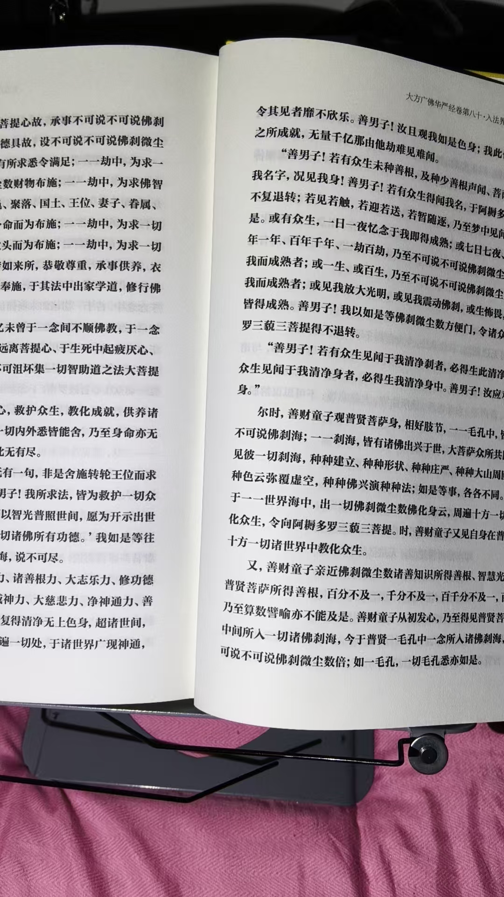

20261030八十华严第三部， 也是心法修炼
修炼修行符咒术法 原始对话记录不为人知的故事
释迦牟尼之子罗睺罗
肉身菩萨竟然珍藏于五台山
那个年代，都知道中原是宝地
只有在此才能修成
果然
纷纷来，占宝山宝地，都成就了正果

一夜没睡
还有十二页就读完整部经了
有点兴奋
八十华严第三部，
也是心法修炼
跟四十华严一样，细节修炼
这样，就相当于修了三遍华严经心法
自当神通具足
时，善财童子又见自身在普贤身内，十方一切诸世界中教化众生
以下为编者整理的主题文章
编者整理 · 主题文章
还剩十二页
导读：一夜没睡。八十华严读到第三部，还剩十二页，有点兴奋。他说这跟四十华严一样是细节修炼，等于修了三遍华严心法，自当神通具足。
开头是一段"不为人知的故事"。释迦牟尼之子罗睺罗，肉身菩萨竟然珍藏于五台山。那个年代，都知道中原是宝地，只有在此才能修成。果然，纷纷来，占宝山宝地，都成就了正果。
然后才是他自己的事，三行。
"一夜没睡。" 还有十二页，就读完整部经了。"有点兴奋。"
八十华严第三部，也是心法修炼。跟四十华严一样，细节修炼。他算了一笔：这样相当于修了三遍华严经心法，"自当神通具足"。
末尾引了一句经：时，善财童子又见自身在普贤身内，十方一切诸世界中教化众生。
一页就这么长。前面是别人的故事，中间是他一夜没睡，后面是普贤身内的善财童子。
说明与免责：本站为民间修炼、民俗文化与传统文化资料的整理与记录，内容源自传承者口传与个人修习体会，仅供文化交流与研究参考，不构成医疗、健康、投资或任何功效承诺。所述内容属传统术数范畴，请理性看待；如身体不适，请及时就医。请遵守法律法规与公序良俗。